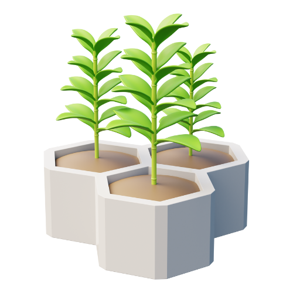

Tips Menyiram Tanaman yang Penting

- Kenali Kebutuhan Pelajari berapa banyak dan seberapa sering tanaman butuh air.
- Waktu Tepat Siram saat tanah mulai kering, tapi jangan biarkan terlalu kering.
- Jangan Berlebihan Terlalu banyak air bisa merusak akar, jadi jaga keseimbangan.
- Drainase yang Baik Pastikan pot memiliki lubang drainase agar air tidak tergenang.
- Perhatikan Tanda-tanda Layu atau daun kusam bisa jadi pertanda tanaman haus. 🌱💧